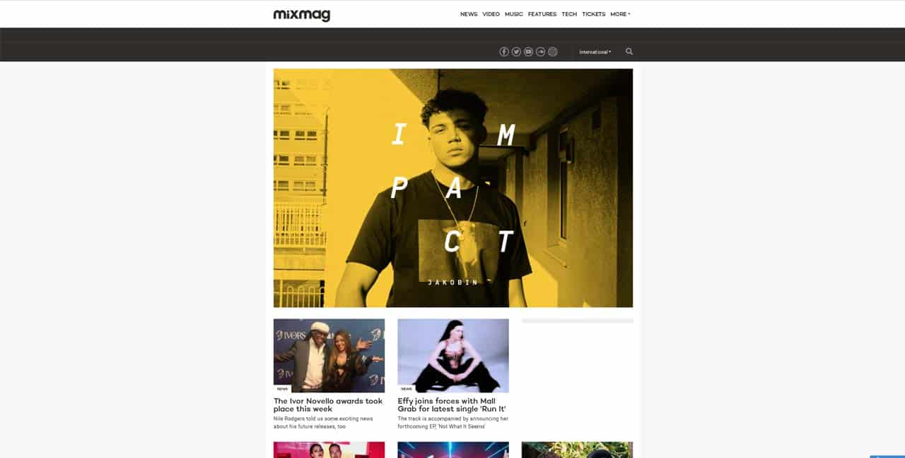
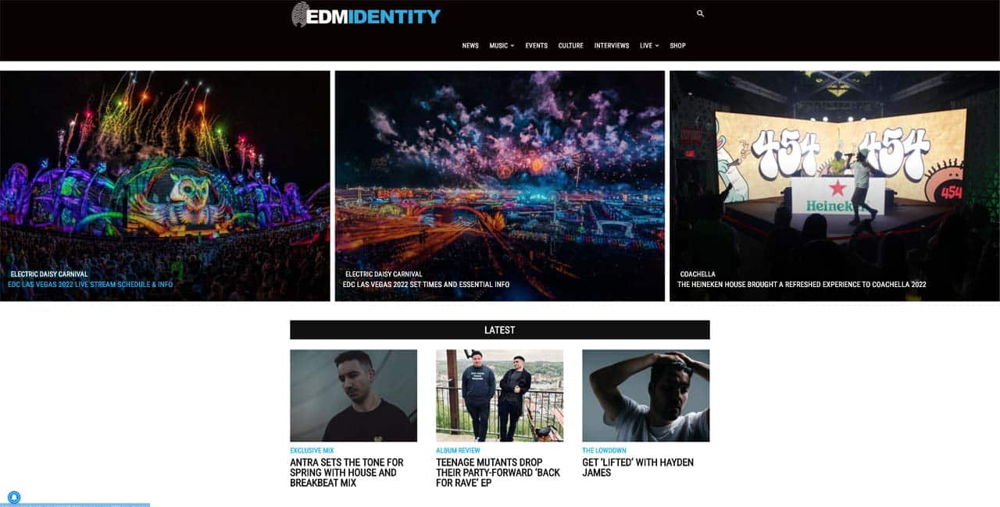

Claiming to be the world’s foremost authority on EDM, EDM.com certainly puts in the work for it. The blog site is chock full of music news, artist spotlights and interviews with rising stars. Their coverage is wide and comprehensive, so definitely check them out!
1. EDM.com
Claiming to be the world’s foremost authority on EDM, EDM.com
certainly puts in the work for it.
2. DJ Mag
Founded in 1991, DJ Mag primarily focuses on the bustling British
EDM scene, though they cover other scenes as well.
 Founded in 1991, DJ Mag primarily focuses on the bustling British
EDM scene, though they cover other scenes as well. Their featured
editorials are always excellently written and informative, giving
great advice to burgeoning EDM stars, DJ Mag is easily one of the
Best EDM Blogs of 2022.
Founded in 1991, DJ Mag primarily focuses on the bustling British
EDM scene, though they cover other scenes as well. Their featured
editorials are always excellently written and informative, giving
great advice to burgeoning EDM stars, DJ Mag is easily one of the
Best EDM Blogs of 2022.
3. Mixmag
A pioneer of popularizing EDM, Mixmag is a British electronic dance
and clubbing magazine.

A pioneer of popularizing EDM, Mixmag is a British electronic dance
and clubbing magazine. Starting as a print based magazine in 1983
London, they’re now a hotbed for promising new British EDM artists.
With news and music highlights every day, it’s a must visit for EDM
fans.
4. Dancing Astronaut
Dancing Astronaut is a digital magazine based in New York. Their
main target is the American EDM scene
Dancing Astronaut is a digital magazine based in New York. Their
main target is the American EDM scene, where they compile as much
information as possible on releases and popular artists. They
actively feature their content on social media, with some cultural
coverage in the mix.
5. EDM Sauce
EDM Sauce are some of the best when it comes to pure EDM coverage.
EDM Sauce are some of the best when it comes to pure EDM coverage.
The blog is one of the most active, constantly keeping tabs on EDM
releases worldwide. They highlight growing artists in their new
music columns, as well as offer equipment advice and notes.
6. Earmilk
Straddling the line between underground and mainstream is Earmilk.
Straddling the line between underground and mainstream is Earmilk.
While their main genre is EDM, Earmilk also covers other genres at
times. They have a quality pedigree they maintain when covering
music releases, so you’re bound to find something good here.
7. Magnetic Magazine
Magnetic Magazine fashions itself as a lifestyle magazine based
around EDM culture.
 Magnetic Magazine fashions itself as a lifestyle magazine based
around EDM culture. While there are many articles about artists,
they also feature lighter articles about fashion and music
festivals.
Magnetic Magazine fashions itself as a lifestyle magazine based
around EDM culture. While there are many articles about artists,
they also feature lighter articles about fashion and music
festivals.
8. EDM Identity
Putting quality first is the keyword of EDM Identity.

Putting quality first is the keyword of EDM Identity. Their
excellent reporting is backed by their comprehensive list of music
festivals, so it’s a great blog to catch up on new concerts near
you.
9. We Rave You
We Rave You takes things in a slightly different direction. W
We Rave You takes things in a slightly different direction. While
they still have an EDM focus, the site also does a bit of
everything. There’s a nice bit of variety in their content, breaking
up the monotony a little and keeping things engaging.
10. EDMTunes
EDMTunes is a site that puts the music first.
 EDMTunes is a site that puts the music first. Constant coverage on
new releases and festivals make them a good place to catch up. On
top of that, their submission column lets readers send in their own
music to be featured, which is nice.
EDMTunes is a site that puts the music first. Constant coverage on
new releases and festivals make them a good place to catch up. On
top of that, their submission column lets readers send in their own
music to be featured, which is nice.
11. Your EDM
Your EDM is a great little site that’s a touch more personal than
more other EDM blogs.
Your EDM is a great little site that’s a touch more personal than
more other EDM blogs. On top of their well written news articles,
they also have an active Discord server for fans to mingle in.
12. Beatportal
Beatportal is another site with a big eye for new and upcoming
artists.
Beatportal is another site with a big eye for new and upcoming
artists. While they have articles and features, they also have
Beatport Next, a program that helps the development of new EDM
artists.
13. EDM Reviewer
EDM Reviewer, as the name suggests, is a blog that reviews new EDM
releases as their main content.
 EDM Reviewer, as the name suggests, is a blog that reviews new EDM
releases as their main content. They do cover releases as well,
though the reviews are what set them apart from others. The writing
is excellent, and we highly recommend adding them to your regular
lineup.
EDM Reviewer, as the name suggests, is a blog that reviews new EDM
releases as their main content. They do cover releases as well,
though the reviews are what set them apart from others. The writing
is excellent, and we highly recommend adding them to your regular
lineup.
14. Run the Trap
Founded in 2012, Run the Trap mixes rap, trap and EDM coverage
together.
Founded in 2012, Run the Trap mixes rap, trap and EDM coverage
together. Their articles and news updates are quality stuff, and
their EDM centric pieces are very good as well. A good site if you
like a bit of variety.